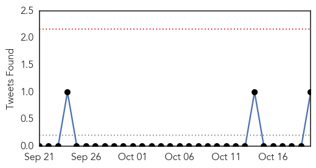

30 Day Trends
Web: 8 alerts, 6 warnings
Twitter: 0 alerts, 0 warnings
Top Articles:
- 0.999
- Protect yourself and your family from the flu
- 0.995
- Health, Wellness, and Fitness: 10/20
- 0.992
- Flu vaccines available in two provinces
- 0.991
- Get your flu shots as early as possible, despite some shipping delays
- 0.991
- Immunize El Paso to give flu shots countywide through November
- 0.990
- Fighting against the flu bug
- 0.984
- Flu shot still best weapon at hand
- 0.982
- Fewer than fifty percent in U.S. get flu shots, CDC says -
- 0.980
- Shortage of vaccination mist greets flu season
- 0.974
- Five and six-year-olds included in the NHS seasonal flu vaccination campaign for the first time
- 0.915
- Free flu shots for uninsured adults starts this week
- 0.863
- Future flu: ASU experts weigh in on where the annual shot is heading
- 0.839
- Flu shots won't be mandatory for health-care workers in Alberta
- 0.811
- Rota supporters gathering at North Bay's Davedi Club
- 0.806
- Today's stories from newspapers in Caledon
- 0.806
- Today's stories from newspapers in Caledon
- 0.806
- Today's stories from newspapers in Caledon
- 0.785
- Today's stories from newspapers in Ottawa Valley
- 0.785
- Today's stories from newspapers in Ottawa Valley
- 0.785
- Today's stories from newspapers in Ottawa Valley
- 0.779
- Health officials urge getting flu vaccine despite FluMist shortage
- 0.751
- October 20, 2015 Archives
- 0.751
- October 19, 2015 Archives
- 0.750
- Gov. Haslam gets flu shot, urges others to follow suit
- 0.723
- Saskatchewan flu vaccine clinics open, FluMist in limited supply
- 0.663
- Flu shot clinics open
- 0.554
- News in Brief 20 October 2015 (PM)
- 0.536
- Sask. 'immunize or mask' policy takes pause, but still encouraged
- 0.520
- Free flu vaccines available at Malibu Library on Oct. 24
Top Tweets:
- 0.921
- Health Care Professionals: This season’s Flu vaccine includes updated H3N2 & influenza B virus components. More: https://t.co/PoO4nhnzCr
Web/News Articles

Tweets
Article Locations

Article Confidences